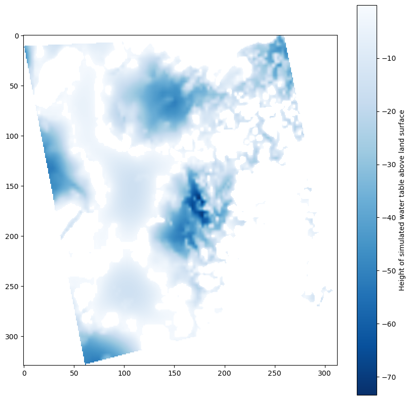
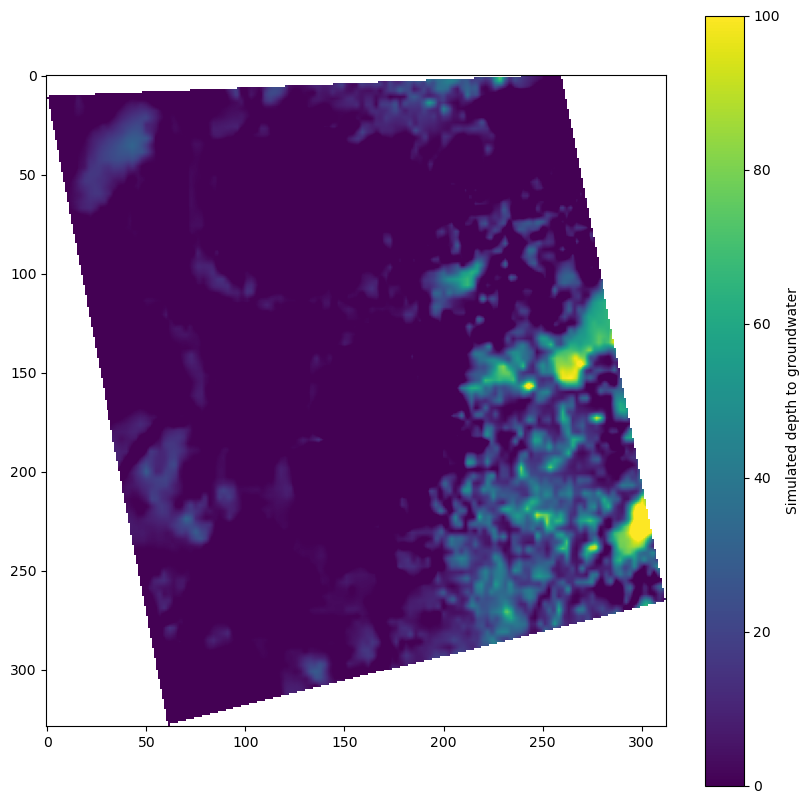

Examples of using the lsmaker.utils module to export and visualize results from a GFLOW simulation¶
[1]:
from pathlib import Path
import matplotlib.pyplot as plt
from matplotlib.collections import PatchCollection
import rasterio
from descartes import PolygonPatch
import lsmaker
from gisutils import shp2df
plt.rcParams['figure.figsize'] = 10, 10
[2]:
# GFLOW model parameters for test case
solver_x0 = 671467.1 # origin of GFLOW solver coordinates in NAD 27 UTM 15
solver_y0 = 4997427.91
epsg = 26715 # projected coordinate system reference
inpath = Path('../lsmaker/tests/data/')
dem = inpath / 'dem.tif' # dem for model area
clipto = inpath / 'testnearfield.shp' # extent for output rasters
grd = inpath / 'test.grd' # Surfer GRD file from GFLOW solution
xtr = inpath / 'test.xtr' # Extract file from GFLOW solution
output_folder = Path('temp') # folder for writing output rasters
# make the output folder if it doesn't exist
output_folder.mkdir(exist_ok=True)
output_streamflow_shapefile = output_folder / 'streamflow.shp'
make a shapefile of the streamflow results¶
[3]:
lsmaker.utils.write_streamflow_shapefile(xtr, outshp=output_streamflow_shapefile,
solver_x0=solver_x0, solver_y0=solver_y0, epsg=epsg)
writing temp/streamflow.shp... Done
read in and plot the streamflow¶
[4]:
df = shp2df(output_streamflow_shapefile)
df.head()
reading temp/streamflow.shp...
--> building dataframe... (may take a while for large shapefiles)
[4]:
| x1 | y1 | x2 | y2 | spec_head | calc_head | discharge | width | resistance | depth | baseflow | overlandfl | BC_pct_err | label | geometry | |
|---|---|---|---|---|---|---|---|---|---|---|---|---|---|---|---|
| 0 | 687767.261456 | 5.005139e+06 | 687666.619544 | 5.005053e+06 | 1457.01 | 1456.764 | -6.366638 | 7.766733 | 0.3 | 3.0 | 0.0 | 0.0 | 0.042977 | LS_000061_0101 | LINESTRING (687767.2614559999 5005139.240272, ... |
| 1 | 687666.619544 | 5.005053e+06 | 687582.238712 | 5.005071e+06 | 1457.01 | 1456.474 | -13.887300 | 7.766733 | 0.3 | 3.0 | 0.0 | 0.0 | 0.042901 | LS_000061_0201 | LINESTRING (687666.619544 5005053.399448, 6875... |
| 2 | 687582.238712 | 5.005071e+06 | 687634.670408 | 5.005190e+06 | 1457.00 | 1456.602 | -10.304160 | 7.766711 | 0.3 | 3.0 | 0.0 | 0.0 | 0.043006 | LS_000061_0301 | LINESTRING (687582.238712 5005071.269872, 6876... |
| 3 | 687634.670408 | 5.005190e+06 | 687768.261200 | 5.005140e+06 | 1457.00 | 1456.892 | -2.787542 | 7.766711 | 0.3 | 3.0 | 0.0 | 0.0 | 0.043086 | LS_000061_0401 | LINESTRING (687634.670408 5005189.699912, 6877... |
| 4 | 688403.589368 | 5.006317e+06 | 688378.269632 | 5.006088e+06 | 1463.90 | 1463.847 | -1.363574 | 7.781718 | 0.3 | 3.0 | 0.0 | 0.0 | 0.044174 | LS_000068_0101 | LINESTRING (688403.5893679999 5006316.649144, ... |
[5]:
fig, ax = plt.subplots()
maxflow = df.baseflow.max()
def scale(baseflow, lw, min_lw=0.5):
lw = lw * baseflow/maxflow
return min_lw if lw < min_lw else lw
def color(baseflow, wet='b', dry='0.5'):
return wet if baseflow > 0 else dry
# first plot clipto area where flooded heads will be plotted
cp = shp2df(clipto)
ptch = PolygonPatch(cp.geometry[0])
pc = PatchCollection([ptch], color='0.5', alpha=0.5, zorder=-1)
ax.add_collection(pc)
# plot the lines, scaled by baseflow
for i, r in df.iterrows():
x, y = r.geometry.xy
ax.plot(x, y, lw=scale(r.baseflow, 5), c=color(r.baseflow))
reading ../lsmaker/tests/data/testnearfield.shp...
--> building dataframe... (may take a while for large shapefiles)
Make a raster comparing simulated heads to a DEM¶
this can also be examined in a GIS with other data (wetland coverages, dem, etc.)
[6]:
lsmaker.utils.plot_flooding(grd, dem=dem, epsg=epsg, clipto=clipto,
outpath=output_folder,
solver_x0=solver_x0, solver_y0=solver_y0, scale_xy=0.3048,
dem_mult=1/.3048, resolution=(30, 30))
reading ../lsmaker/tests/data/test.grd...
wrote temp/heads_prj.tif.
reprojecting temp/heads_prj.tif...
from:
EPSG:26715, res: 1.31e+02, 1.32e+02
to:
EPSG:26715, res: 3.00e+01, 3.00e+01...
wrote temp/tmp/heads_rs.tif.
reprojecting ../lsmaker/tests/data/dem.tif...
from:
EPSG:4269, res: 9.25e-04, 9.27e-04
to:
EPSG:26715, res: 3.00e+01, 3.00e+01...
wrote temp/tmp/dem_rs.tif.
input raster crs:
EPSG:26715
clip feature crs:
EPSG:26715
clipping temp/tmp/dem_rs.tif...
wrote temp/tmp/dem_cp.tif
Done.
input raster crs:
EPSG:26715
clip feature crs:
EPSG:26715
clipping temp/tmp/heads_rs.tif...
wrote temp/heads_cp.tif
Done.
wrote temp/dtw.tif
wrote temp/flooding.tif
/home/runner/work/linesink-maker/linesink-maker/lsmaker/utils/gflow_results.py:146: RuntimeWarning: overflow encountered in multiply
dtw = demarr[:h, :w] * dem_mult - hdsarr[:h, :w]
Plot the gridded heads from GFLOW¶
GFLOW limits the resolution to 200 pixels on a side
the plot_flooding macro downsamples these to a specified x,y resolution (
resolutionargument; default is (30, 30), so that information from the DEM is retained when comparing the rastersheads_prjis the projected, but unclipped heads
[7]:
with rasterio.open(output_folder / 'heads_prj.tif') as rst:
hds = rst.read()
plt.imshow(hds[0, :, :], cmap='Blues_r', interpolation='none')
plt.colorbar(label='Gridded simulated heads from GFLOW')
Plot raster of simulated flooded heads¶
[8]:
with rasterio.open(output_folder / 'flooding.tif') as rst:
fld = rst.read()
plt.imshow(fld[0, :, :], cmap='Blues_r')
plt.colorbar(label='Height of simulated water table above land surface')

Plot raster of simulated depth to groundwater¶
[9]:
with rasterio.open(output_folder / 'dtw.tif') as rst:
dtw = rst.read()
plt.imshow(dtw[0, :, :], vmin=0, vmax=100)
plt.colorbar(label='Simulated depth to groundwater')

[ ]: